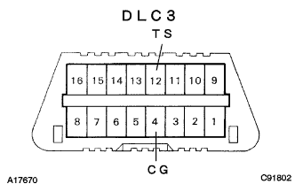
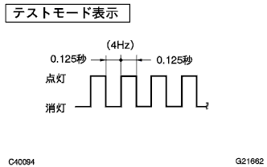
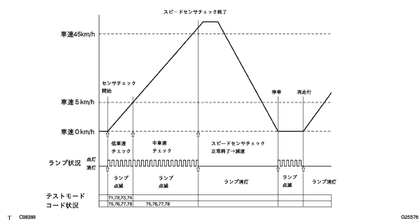
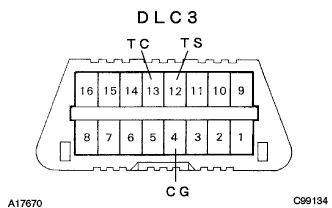

Test mode startup method (TASCAN)
Turn off the IG switch and connect the SST to DLC3.
- SST
- 09991-70200
Turn on the IG switch and switch to test mode according to the SST display screen.
Test mode startup method (DLC3 short circuit)
In the IG switch off, use the SST to shortly use the DLC3 12 (TS) ← → 4 (CG) terminal.
- SST
- 09843-18040
- ■ Attention ■
- There is no mistake in the connector connection position because it causes a failure.
Turn on the IG switch.
|  |
Test mode display confirmation
When the test mode is started, the ABS Warnin Grand Pamps are turned into the test mode by switching to pulse blinking after a few seconds.
- ■ Attention ■
Test mode code operation conditions DLC3 IG switch ON IG switch off IG switch OFF → ON TS-CG terminal short circuit Maintaining memory Maintaining memory Maintaining memory Opening between TS-CG terminals Maintaining memory Maintaining memory Memory erasure
|  |
Speed sensor chak
Start without wheel spinning on the handle straight, speed up to 45km/h or higher, and confirm that the ABS Warnin Grand lamp turns off.
- ■ Attention ■
- If you start a sensor chaeck with the steering state, the speed sensor chaeck may not end if the wheel spin is made.
- After turning off the ABS Warnin Gramp, if you drive at 80km/h or more, you will remember the test mode code again, so it will decelerate and stop before reaching 80km/h.
- In the case of the sensor chak, the ABS Warnin Gramp flashes while driving, and the ABS does not work.
- In the event of an abnormal speed sensor, the diagnostic cord is memorized, the ABS warnin glamp lights up, and the ABS does not work.
- □ Participation □
- When the speed sensor chaeck is finished normally, the ABS Warnin Gramp will turn off while driving, and flashes test mode during the stop.

End of sensor chak
If the sensor chaeck is finished successfully, the ABS Warning Lamp lit state will blink during the vehicle stop (test mode display) and turn off during vehicle driving.
- ■ Attention ■
- When the speed sensor ends normally, the sensor chak ends.
- If the sensor chak is not terminated, the ABS Warnin Gramp will flash while driving, and the ABS will not work.
- In the event of an abnormality, the diagnostic cord is memorized, the ABS Warnin Gramp lights up, and the ABS does not work.
- If a diagnostic cord is detected during test mode, the ABS Warnin Grand Lamp will light up.
Read test mode code by SST (Tascan)
Connect the SST to DLC3 with IG switch off.
- SST
- 09991-70200
Turn on the IG switch and follow the Tascan display screen to read the test mode code.
Test mode code read by Warnin Grand Pood
In the IG switch off, use the SST to shortly use the DLC3 12 (TS), 13 (TC) ← → 4 (CG) terminals.
- SST
- 09843-18040
- ■ Attention ■
- There is no mistake in the connector connection position because it causes a failure.
- Perform in the vehicle stopped.
Turn on the IG switch and read the number of flashes of the ABS Warnin Gramp.
- □ Participation □
- The test mode code and the diagnostic code are displayed.
- In the case of normal, 0.25 seconds lit and 0.25 seconds turn off.
- If the abnormal code is one, output the same code at 4 seconds, output multiple code at 2.5 seconds, and once round, once a round of 4 seconds.Output.
- When outputting multiple code, output in order from the small code number.
- ■ Attention ■
- If only the diagnostic code is displayed, repair the problem point and delete the diagnostic cord.After erasing, make sure that the ABS Warnin Gramp is normal.
- If only the test mode code is displayed, repair the defective point and perform the test mode again.
- When the diagnostic code and test mode code are displayed, the defective part is repaired, the diagnostic code is erased, and the test mode inspection is performed again.
|  |
 |
Test mode termination method (TASCAN)
Switch from test mode to normal mode according to the SST (Tascan) screen display.
Turn off the IG switch and remove the SST.
Test mode termination method (DLC3 short circuit)
Turn off the IG switch and open the DLC3 13 (TC), 12 (TS) ← → 4 (CG) terminals.
Turn on the IG switch.
- □ Participation □
- TS ← → Test mode will continue to be fully opened while the IG switch is short -circuited.